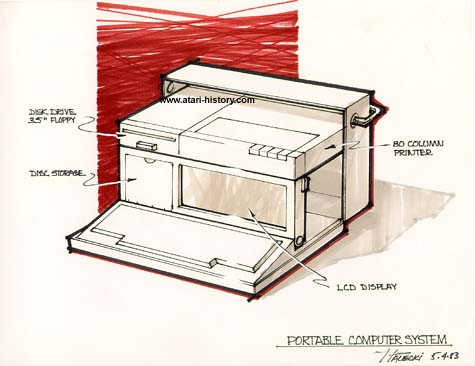

Again, utilizing space to the most efficient levels, this laptop concept
which is similar to a system released many years later by IBM called the
PS/2 Model P70, this foldup all-in one system provided disk disk drive
as well as disk storage, 80 column printer, large LCD display and most
likely a full keyboard with possible keyboard based on what the dimensions
may have had to be in this system, all this and it would fold up into a
nice convenient carrying case with handle. Impressive.